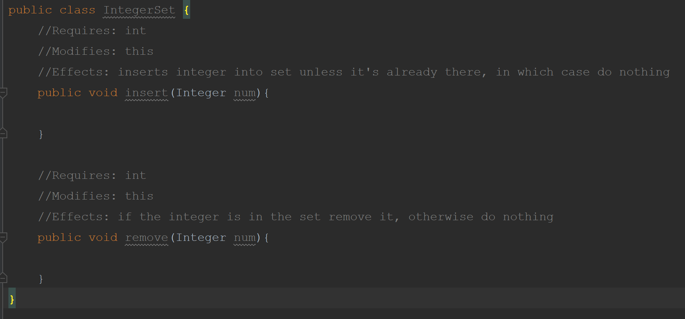
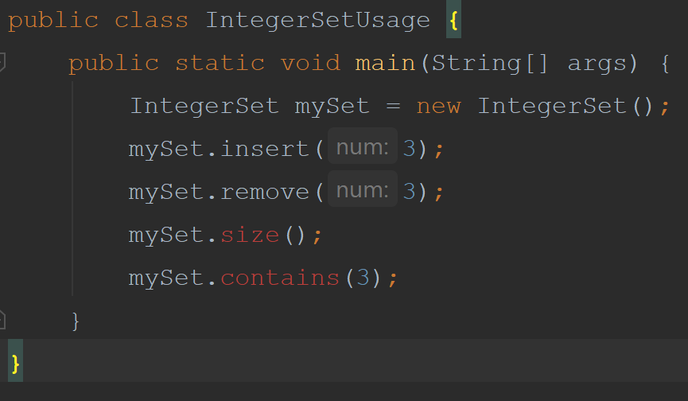

This will help us in figuring out if our specification needs any other methods. How will out class be called by classes outside of IntegerSet. So far we have a class called IntegerSet that looks like the following:
We need to create a class to interact with our integer set. Call it IntegerSetUsage and give it the public static void main method so that we can run the program. We need to look at how the set will be used. We know that we will call .insert(num) on our integer set. First we need to instantiate a new IntegerSet. Then setup how we will use it, which in this case is just insert and remove numbers from the set. However, we may want to check how big our set is. This would require a method. We also might want to check if our set contains a certain value. This also would require a method. Our two new methods are .contains(num) and .size().
We now have to add our two methods to our class.
Now we need to think all the test cases we need to check to make sure the methods will work properly when we code them. We need to write test that check the semantics of our code make sure the meaning is what we intended. We call this test driven design. First we write our tests and the run our tests which fail. We then implement our abstraction until the tests pass.
When designing our tests we should look at our effects clause. For our insert method we have 2 cases either the number is in
the set or it is not. We have 2 pathways that we will need to check. To write the test case if the number is not in the set already
we first give it a name. TestInsertNotAlreadyThere insert a number that is not in the set. How will we know if the
test is correct? We need an outcome. which in this case is number appears in set. We use inputs and outputs to test our methods.
In this case our input is a unique num and the output is the num is added to data set.
Our next test is TestInsertAlreadyThere input: number already in set. output: number appears only once in set.
Now that we know what tests we want to run for the insert method. How do we actually write the code to test it? JUnit is what we call an external library. External Libraries in java is code that someone else has already written. We are just going to use it with our program. This is a very large part of learning how to write programs is finding and using external libraries of code. The video below shows how to get JUnit set up in your program.
To check for your understanding we will have a small assignment were you code in the second test, TestInsertAlreadyThere. This test will be similiar to the first one we created. You should not need any new junit methods. For you class you may want to insert some methods that have "dummy" values since our two new methods of contains and size return a value. The starting project from our video is on the github folder called DataAbstraction